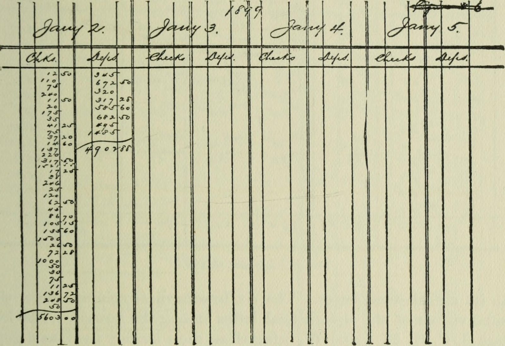

Bank statement reader
In daily use
Staff read every statement line by line and typed each payer into a spreadsheet, the way bank clerks kept ledgers a century ago.
Now a Python reader handles each bank's layout, n8n applies the firm's rules, and a review page lets the team approve, fix or reject each payer. Approved rows reach the case trackers on their own. About 400 tests, nightly backups, and every correction becomes next week's fix.
Ask me how it works